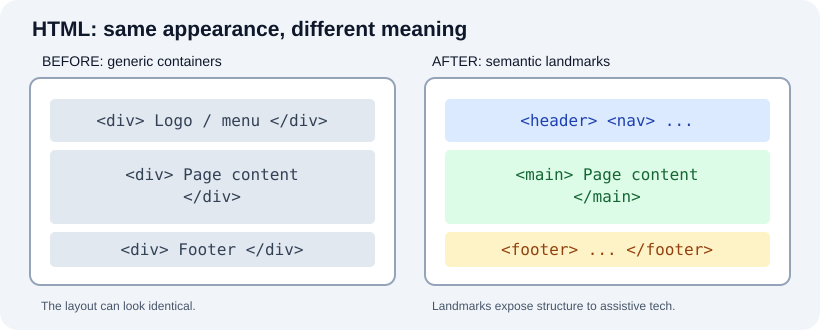
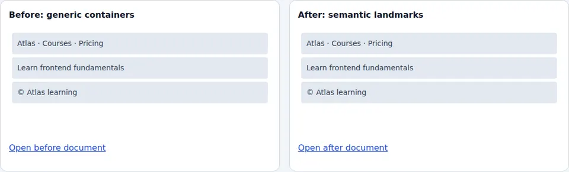
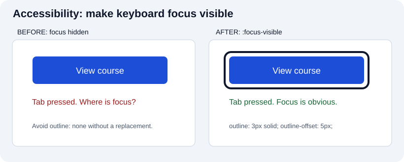
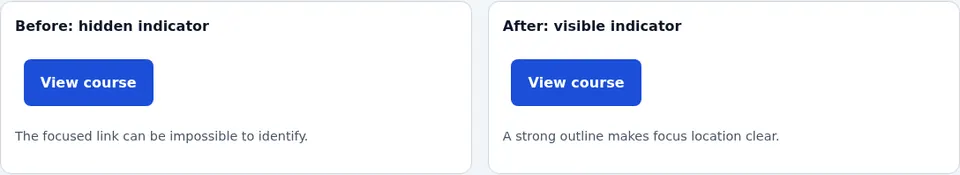

Quizzes on Frontend
Use these expandable questions to test explanations, not just terminology. Before opening an answer, predict the result and try a small browser example. The categories cover HTML, CSS, JavaScript, protocols and hosting. Examples are illustrative; versions, browser support and hosting prices should be verified when you use them.
HTML
Applied HTML scenarios — predict, then verify
1. A document has a viewport meta tag but a 900px-wide image overflows on a 320px phone. Why?
The viewport declaration changes viewport sizing behavior; it does not constrain fixed-width content. Use a responsive rule such as img { max-width: 100%; height: auto; }, inspect the container, and test with actual content. Try the responsive browser demo at narrow widths.
2. A form has placeholder="Email" but no label. What disappears when someone types?
The visible prompt disappears; the input may also lack a reliable accessible name. Use <label for="mail">Email</label><input id="mail" name="email" type="email">. Helper text is separate from the label. The form comparison screenshot shows what feedback changes visually.
{kind=link}
3. Should a clickable logo that navigates home be a button or link?
Use a link with a real href and an accessible name representing the destination. Use a button for an action that does not navigate. If the logo image is the link's only content, meaningful alt text can supply its name.
4. Does replacing every div with section make the page automatically accessible?
No. Choose elements by meaning; section generally needs an accessible identifying heading when used as a region. A page needs sensible heading order, link text, forms, keyboard behavior and testing. Compare the semantic structure browser capture and inspect its two underlying HTML documents.
{kind=link}
5. A data table has visually bold first-row cells written as td. What information is missing?
The cells are not explicitly headers. Use <th scope="col"> for simple column headers, <th scope="row"> for row headers, and a <caption> when useful. CSS can style td bold, but that does not give it header semantics.
What is a doctype?
The HTML doctype is written
, at the beginning of the document. It triggers the browser's no-quirks (standards) mode; it is not a declaration selecting a specific HTML version. Omitting or changing it can cause legacy quirks-mode layout behavior.
Should I use HTML or XHTML?
For most ordinary web pages served as text/html, use HTML syntax and the HTML Living Standard. XHTML uses XML serialization, usually with the application/xhtml+xml media type, so XML well-formedness rules apply; choose it only with a concrete requirement and proper content negotiation. An XHTML-like trailing slash in an HTML void tag does not turn an HTML document into XML.
How do I build menus?
For site navigation, use <nav> with descriptive <a href> links; a list (<ul><li>…) is optional when it adds useful grouping. An ARIA menu is a distinct application-style pattern that brings additional keyboard requirements. Do not add role="menu" to an ordinary site navbar just for styling.
How do I build forms?
Use <form> with labeled controls such as <input>, <select>, <textarea>, and <button>. Every control needs an accessible name; for example, <label for="email">Email</label><input id="email" name="email" type="email" required>. A placeholder is not a substitute for a persistent label. Client-side validation helps interaction but the server must validate submitted values again.

Actual browser-rendered before/after:

Try the live form demonstration and submit both invalid and valid input.
What is the purpose of the head element if users cannot see most of it directly?
<head> contains metadata and resource references such as document title, character encoding, viewport, CSS and certain scripts. The title is visible in browser tabs and often in bookmarks and search results. Metadata also affects processing and accessibility; it is not just information for developers.
What is the difference between header and h1?
<header> groups introductory content or navigational aids for a page or section. <h1> is the highest-level heading, defining a topic in the heading hierarchy, not merely choosing a font size. A header can contain an h1, but neither replaces the other. Use headings in logical order; style appearance with CSS.
What is the purpose of the alt attribute on img?
alt supplies an alternative appropriate to the image's purpose, not always a literal description. For a decorative image, use alt=""; for an informative diagram, summarize the information; for an image-only link, communicate the link's destination or action. It can also appear as fallback if the image cannot load.
What are semantic HTML elements?
Elements such as <article>, <aside>, <figcaption>, <footer>, <header>, <main>, <nav>, and <section> communicate purpose and relationships. Choose by meaning and behavior rather than appearance. A <div> is fine when no semantic element fits. Semantics assist navigation but do not automatically guarantee accessibility or SEO.

Actual browser-rendered before/after:

How do I create a table in HTML?
Use <table> for tabular data; <tr> creates rows, <th> header cells and <td> ordinary cells. Add <caption> when useful and scope="col" or scope="row" for simple header associations. For complex headers, explicit headers/id relationships may be needed. Do not use tables just to arrange a page layout.
What are the main differences between HTML and CSS?
HTML describes content and meaning; CSS specifies presentation and layout. HTML should still make sense without CSS. For example, <button>Subscribe</button> provides a native control while CSS changes its color, spacing and focus appearance.
What is an iframe and when should I use it?
<iframe> embeds another browsing context, such as a map or video. Give it a useful title, consider loading="lazy" for off-screen content, review permissions via allow, and use sandbox when applicable. The embedded content has its own accessibility and security responsibilities. An iframe is not the default solution for ordinary internal components.
CSS
Applied CSS scenarios — inspect the computed result
1. A card declares width: 320px, padding: 24px on each side and a 2px border on each side. How wide is its border box by default?
With default box-sizing: content-box, it is 320 + 48 + 4 = 372px, excluding margins. With border-box, a declared width of 320px includes padding and borders when layout can resolve the dimension. Inspect the Box Model in DevTools.
2. An ID selector and a class selector set different colors. Does the last rule always win?
No. If origin, importance, layer and other earlier cascade stages tie, specificity decides; an ID selector is more specific than a class selector. Source order resolves ties at the relevant stage. Important declarations and cascade layers complicate this, so inspect computed styles.
3. flex-direction changes from row to column. Does justify-content still mean horizontal alignment?
No. justify-content uses the main axis, which changes with flex-direction; align-items uses the cross axis. Experiment with the actual Flexbox comparison.
{kind=link}
4. What does a size container query measure that a media query does not?
A size container query tests an eligible ancestor container's dimensions, not the viewport. Declare a container such as container-type: inline-size, then use @container. The query styles descendants, not the query container itself. See the responsive navigation captures.
{kind=link}
5. Why is outline: none dangerous on interactive controls?
It can hide keyboard focus. Replace it with a strong :focus-visible outline when styling focus, test Tab navigation and forced-colors mode. Compare the browser focus image.
{kind=link}
How do I add CSS to a website?
Inline styles use an element's style attribute; internal styles use a <style> element; external styles use <link rel="stylesheet" href="styles.css"> in the head. External stylesheets are often easier to share and cache. Choose according to scope and maintainability.
How can several pages use the same CSS?
Link the same external stylesheet from each page with the appropriate relative or absolute path. For example, <link rel="stylesheet" href="/css/site.css"> assumes that /css/site.css is available at the site's root. Confirm the URL works for your deployment's base path.
How do I change the background color?
Use background-color, for example body { background-color: #f0f0f0; }. Check that foreground text has sufficient contrast against the new background, including disabled and error states.
How do I remove a blue outline on linked images?
First identify which property you see: an image border and the focus outline are different. Do not globally apply outline: none to links. Keep a visible keyboard focus indicator, for example a:focus-visible { outline: 3px solid currentColor; outline-offset: 3px; }. You may style the border separately if a border is unwanted.

Actual browser-rendered before/after:

Should I use px, pt, em or rem?
CSS px is a reference pixel, useful for borders and some measurements; rem depends on the root element's font size, while em depends on the current element's computed font size (or parent for font-size). pt is often used in print styles. Use scalable text and test browser zoom; no unit choice alone makes a page responsive.
What is the difference between classes and IDs?
A class value can be reused across elements; an HTML id must be unique within its document. CSS selects .class-name or #unique-id. IDs also support fragment navigation and label associations, so do not duplicate them.
How do I center a block element horizontally?
Give it an inline size smaller than its containing block and auto inline margins: .centered { width: min(100% - 2rem, 60rem); margin-inline: auto; }. margin-inline is writing-mode aware. Flexbox or Grid can center children for different layout needs; horizontal centering does not automatically produce vertical centering.
What is the CSS box model?
From inside to outside: content, padding, border, and margin. With box-sizing: border-box, the declared width includes content + padding + border, not margin. Use DevTools to inspect an actual element's computed box. Margin collapsing can affect vertical spacing in some block layouts.
What is a CSS pseudo-class?
A pseudo-class matches state or structure, such as :hover, :checked, :focus-visible, or :nth-child(). :hover is not a substitute for keyboard focus styling. A pseudo-element, such as ::before, represents a different selector concept.
What is the difference between display: none and visibility: hidden?
display: none removes the element's box from layout and generally removes it from the accessibility tree. visibility: hidden makes it invisible while retaining its layout space and also normally hides it from the accessibility tree. opacity: 0 only changes opacity and can leave an interactive invisible control—do not substitute it without considering focus and accessibility.
JavaScript
Applied JavaScript scenarios — explain each output
1. What do Number('12px') and parseInt('12px', 10) produce?
Number('12px') is NaN; parseInt('12px', 10) returns 12 because it accepts a valid integer prefix. A form that requires the whole string to be an integer should validate the entire input, not silently accept trailing text.
2. Is Number.MIN_VALUE the most negative finite Number?
No. It is the smallest positive nonzero representable Number. The finite negative value with greatest magnitude is -Number.MAX_VALUE, while -Infinity is not finite.
3. Why can fetch('/missing') resolve even when the server returns 404?
The Fetch promise generally resolves to a Response for HTTP errors. Check response.ok or response.status; reject/throw explicitly for application handling. Network failures and aborts are different cases.
4. What logs first: a synchronous statement, a Promise.then callback, or setTimeout(..., 0)?
The synchronous statement runs during the current job, then the Promise reaction microtask, then the timer task (assuming a typical browser event-loop case). A zero-delay timer does not execute immediately in the middle of the current job.
5. Does assigning a React state variable immediately change its value in the current render?
No. A state setter schedules an update; code in the current render/event sees that render's state snapshot. Use a functional updater like setCount(c => c + 1) when next state depends on previous state. React's old ReactDOM.render API should be replaced with createRoot for current examples.
Will my React-powered website only work in browsers that support React?
Users do not separately install React; the application delivers appropriate JavaScript and possibly server-rendered HTML. But not every browser is supported automatically: compatibility depends on the React version, compiled syntax, target browsers, APIs, and polyfills. Check the current framework and build-tool support statements.
Do clients need to install Angular on their computers or phones?
No. The deployed application delivers compiled JavaScript, CSS and HTML or renders some HTML on a server. It still requires browser support for the generated syntax and used web APIs; users normally do not install a separate Angular runtime themselves.
What is JavaScript and what can it be used for?
JavaScript is a dynamically typed, multi-paradigm programming language used in browsers, servers and other runtimes. Browser hosts provide the DOM and fetch; Node.js provides other host APIs. Calling JavaScript purely “interpreted line by line” is inaccurate: engines can parse, compile and optimize execution.
What is the difference between var, let and const?
var is function-scoped (or global when declared in the relevant global context) and can be redeclared; let and const are block-scoped and have a temporal dead zone before initialization. A const binding cannot be reassigned, but an object referenced by it may still be mutated. Prefer const when you do not reassign and let otherwise.
What is an object in JavaScript?
An object has properties whose keys are strings or symbols; property values can have any JavaScript type. Arrays are objects with specialized array behavior. Map is a separate collection with different iteration and key semantics, including object keys; it is not just another ordinary object literal.
What is a closure?
A function retains access to the lexical environment in which it was defined. Example: function counter() { let n = 0; return () => ++n; } const next = counter(); next(); // 1 and the next call returns 2. Each counter() call creates a distinct captured n.
What is the difference between synchronous and asynchronous code?
Synchronous operations follow the execution flow until they finish or throw. Asynchronous operations may finish later, using callbacks, promises and async/await. await suspends its async function, not the whole JavaScript runtime; JavaScript does not automatically execute adjacent lines simultaneously. Understand the event loop and potential blocking CPU tasks.
What is the difference between == and ===?
== performs the abstract equality comparison with some coercions (0 == false is true); === compares without those coercions (0 === false is false). Neither operator structurally compares two independently created objects; object equality is normally by reference. Prefer === unless the coercion is intentional and understood.
What is a callback function?
A callback is a function supplied to another piece of code to call according to its contract. It may run synchronously, as in array.map(fn), or later, as in an event listener. A callback does not necessarily wait until the outer function completes.
What is the difference between a function declaration and expression?
A declaration such as function greet() {} creates a binding whose initialization follows declaration semantics. A function expression such as const greet = function () {}; creates a function value as the expression is evaluated; calling the const binding before initialization throws. Function expressions can be named or anonymous, contrary to the claim that they are always anonymous.
What is an arrow function?
Arrow syntax uses =>, not =. A concise body returns an expression (const double = n => n * 2); a block body requires an explicit return to return a value. Arrows also have lexical this and cannot be used as constructors with new.
Protocols
Applied network scenarios — choose the right layer
1. Does HTTP/3 require a TCP connection?
No. HTTP/3 runs over QUIC, which uses UDP and provides reliable streams with TLS 1.3 integration. HTTP/1.1 and HTTP/2 commonly use TCP. The HTTP semantics are not identical to the underlying transport format.
2. The DNS A record is correct but HTTPS shows a certificate warning. Which layer needs investigation?
DNS resolution alone cannot validate the TLS certificate. Inspect certificate hostname, expiry, provisioning and chain, as well as the server's HTTPS configuration. Do not disable certificate verification to hide a problem.
3. Does CORS prevent another client from calling a public API?
No. CORS mediates cross-origin access by browser scripts. It is not authentication or authorization; the API must enforce permissions server-side regardless of origin.
4. Why might a cached page return 304?
A conditional request allows a server to indicate the cached representation is still valid. The client can reuse an appropriate stored body; 304 does not carry a new normal representation body. Inspect validators and Cache-Control instead of calling every cached response an error.
5. Why is curl -I insufficient proof that a site's GET route works?
curl -I sends HEAD; some applications handle HEAD differently. Verify the actual GET request and response body/content type when debugging a page. Check status, redirects and network failures separately.
What is SSL?
SSL is the obsolete predecessor to TLS (Transport Layer Security). Modern HTTPS uses TLS rather than the old SSL protocols. TLS protects data in transit between endpoints when properly configured, but cannot prevent compromise of an endpoint or guarantee that a website's content is trustworthy.
What is HTTP?
HTTP defines request and response message semantics, methods, status codes and headers for transferring representations of resources. HTTP/1.1 and HTTP/2 commonly run over TCP, while HTTP/3 runs over QUIC over UDP. HTTPS means HTTP protected by TLS (including TLS 1.3 integrated with QUIC for HTTP/3).
Why are there many HTTP status codes?
They classify outcomes: 1xx informational, 2xx success, 3xx redirection, 4xx client-error responses, 5xx server-error responses. For example, 200 is successful, 404 means no current representation was found, and 500 indicates a server error. A browser fetch() Promise usually resolves for 404/500; inspect response.ok.
What is an API?
An application programming interface defines how software components interact. It can be a local library interface, browser API or network service; it does not necessarily use HTTP, REST, JSON or a web server.
Do all APIs work the same way?
No. APIs may use HTTP, message queues, RPC, local calls or other mechanisms. JSON and XML are possible formats, not universal requirements. Read the interface contract, status/error model, authentication rules and versioning policy of the specific API.
What is the difference between GET and POST?
GET requests a representation and is defined as safe (it should not cause intended state-changing effects). POST submits a representation for resource-specific processing. GET can contain a query string but does not have to; POST often uses a body but its semantics are not defined solely by the presence of one. Authentication and authorization apply to both.
What is a RESTful API?
REST is an architectural style based on constraints such as a uniform interface and stateless communication. An HTTP API using resource URLs and methods may follow some REST principles. CRUD is a common application pattern, not REST's complete definition; statelessness means each request contains sufficient context, not that servers cannot store any application state.
What are the differences between SOAP and REST?
SOAP is a messaging protocol with an XML-based message format, while REST is an architectural style. RESTful HTTP APIs can choose different representation types. Performance and scalability depend on concrete implementation, payloads, caching and architecture; neither technology is universally faster or more scalable.
What is CORS?
Cross-Origin Resource Sharing is an HTTP-header-based browser mechanism allowing a server to specify which origins may read cross-origin responses from frontend scripts. Browsers may send a preflight request for certain operations. CORS is not authentication or authorization, and it does not prevent a server-to-server client from making an HTTP request.
What is the purpose of a CDN?
A content delivery network uses distributed infrastructure and caching to reduce delivery latency and origin load for suitable content. Benefits depend on configuration, geographical distribution, cache policy and actual user conditions. Some providers offer DDoS mitigation as a separate or integrated service; a CDN does not automatically secure an application.
Hosting
Applied deployment scenarios — justify the next action
1. A static host serves index.html, but a direct reload of /profile returns 404. Is DNS necessarily broken?
No. A client-side router may need an appropriate hosting rewrite/fallback rule, or the route may not exist on the server. Inspect the host's routing behavior and route design rather than changing DNS at random.
2. Can a frontend environment variable named SECRET_API_KEY be considered private?
No, not when its value is shipped in browser JavaScript. Move secret-dependent operations and authorization to a protected backend; storing a secret in a different frontend directory does not hide it.
3. A provider says to create a CNAME for www. Should you overwrite existing MX records at the apex?
No. Mail records have separate purposes. Follow the host's exact hostname instructions, identify the authoritative DNS provider, preserve mail and verification records, and check the applicable record restrictions.
4. Are DNS changes guaranteed to take exactly 48 hours?
No. Recursive caches may retain earlier answers until their TTL; authority changes and operational factors vary. Inspect authoritative records and cached responses rather than quoting a universal duration.
5. The site works locally but styles are missing after deployment. What should you inspect first?
Open DevTools Network, find the CSS request, check its URL, status and content type, and inspect the host's build output path and asset base URL. The error may have nothing to do with JavaScript frameworks or SSL configuration.
What is DNS?
The Domain Name System maps names to records such as A, AAAA, CNAME, MX and TXT. Resolving a name often supplies addresses but DNS does more than translating names to IPs.
What is a DNS server?
DNS servers have different roles. An authoritative server provides records for a zone; a recursive resolver queries and caches answers on behalf of clients. Not every DNS server is a simple two-way domain/IP translator.
How do I set up email for a domain?
Follow your mail provider's instructions for MX records and the relevant sender authentication records, often SPF, DKIM and DMARC via TXT or other specified records. Avoid overwriting existing records. DNS alone does not create a working mailbox or configure anti-spam policies.
How do I set up DNS?
Determine the domain's authoritative nameservers, then add only the records required by the host. A and AAAA associate IP addresses; CNAME is an alias where permitted; MX handles mail, and TXT has verification and policy uses. A managed host may ask for an alias instead of an A record. Changes to cached responses are governed by TTL, not a universal propagation clock.
What is hosting and how does it differ from a web server?
Hosting is an arrangement making web assets or a running application available; a web server is software (and sometimes colloquially the machine) that handles requests. A static deployment can use object storage and CDN infrastructure. Who manages OS patches, certificates and backups depends on the specific plan.
When do I need HTTPS?
Use HTTPS throughout a public site, not only when collecting passwords or payment data. TLS protects the transport and enables important browser security features, but does not establish that the site's claims or business are trustworthy. Configure certificate renewal and redirects appropriately.
How much does setting up a website cost?
There is no reliable universal figure. Scope, domain renewal, hosting tier, design, content, development, maintenance, and regional taxes all contribute. Estimate costs using current vendor prices and a stated timeframe; a historical “less than $100” example is not a dependable general quotation.
What are annual operating costs?
Budget for domain renewal, hosting and usage, backups, monitoring, security updates, content maintenance, support, and any paid third-party APIs or fonts. Check introductory versus renewal prices and the staff time needed to operate the site; revise the budget as traffic changes.
Five applied questions
Does the viewport meta element automatically create a responsive site?
No. It changes viewport behavior; layout still needs flexible widths, media constraints and testing on narrow screens. Compare the responsive navigation diagram with the live example.
{kind=link}
Does Number.MIN_VALUE hold JavaScript's most negative number?
No. Number.MIN_VALUE is the smallest positive nonzero Number, approximately 5e-324. A finite negative number of largest magnitude is -Number.MAX_VALUE.
Can browser required/email validation replace server-side validation?
No. Browser checks improve usability but can be bypassed; the server must validate and authorize the request. The form demo intentionally prevents network submission and explains this limit.
Do all CSS declarations with higher selector specificity win?
No. Origin and importance, cascade layers, scoping and then specificity/source order influence the winner in their defined order. Inspect the cascade diagram and compare computed declarations in DevTools.
{kind=link}
Can I treat a screenshot comparison as an accessibility test?
No. It can detect pixel differences but cannot establish accessible names, focus behavior, announcements or reading order. Use the keyboard and accessibility tree alongside visual regression checks.
References: HTML Living Standard, MDN: doctype, MDN: CSS outline, MDN: fetch, WCAG 2.2.